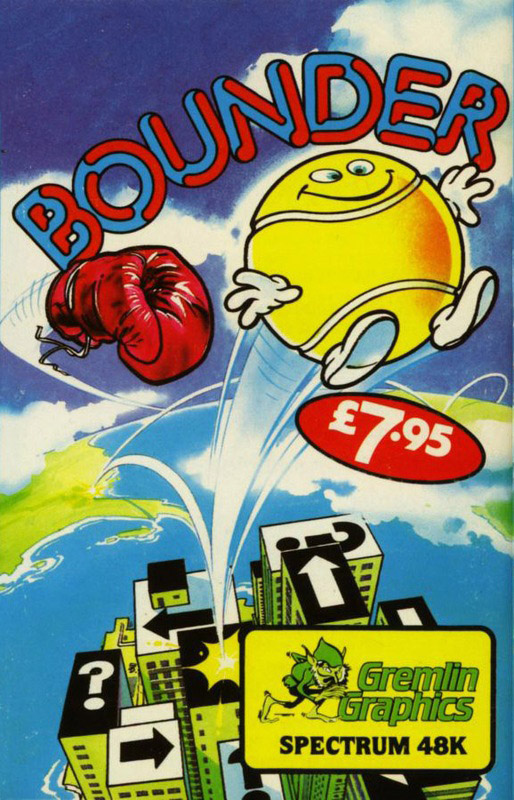
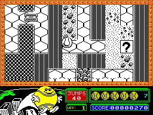
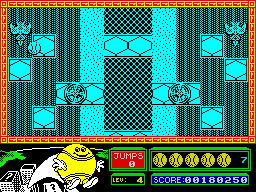
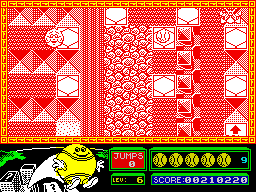

Bounder


{kind=link}

| Publisher: | Gremlin Graphics |
| Price: | £7.95 |
| Year: | 1986 |
| Source: | CRASH, Issue 29 |

In Bounder you have a little bouncing tennis ball to play with — but you’re not going to be playing tennis. The whole idea of the game is to guide the ball through screen upon screen of obstacles while bouncing along the pathway of hexagonal paving stones that scrolls down the screen. It’s a platform game with a difference!
There are 174 screens altogether, split into ten levels — your little bouncing tennis ball is really going to have his work cut out for him. The most general rule is to avoid anything that moves, and only bounce on the hexagonal parts of the screen. This isn’t as easy as it might sound because all manner of nasties have been put in your way. There are piles of jagged rocks, stone walls which have to be circumnavigated, not to mention the odd light scattering of broken glass which punctures even the most resolute of tennis balls on contact.

a bounce of 5 jumps by landing on a
mystery surprise square!
Apart from the rocks and glass, a range of mobile nasties patrol the playing area intent on bursting our little bouncing chum. Binoculoids whizz round trying to knock the ball off course; Moscita birds swoop down on you; Stickits, Chomper Domes and Exocets do their best to live up to their names... you must negotiate your way around them all.
A stock of seven little tennis balls is provided at the start and a life is lost every time you stray off the yellow pathway or mix it with the nasties. There are a few allies in the environment, however, and the whole world isn’t set against ol’ Bouncy. Landing on a square with an arrow in it supercharges the next bounce and the ball can stay in the air for twice as long as usual. Teleports warp the ball to the next teleport square, thus avoiding any nasties lurking in between. Mysterious question mark squares conceal surprises: landing on one reveals the secret, which may be some extra bounces for the Bounceometer at the bottom of the screen, an extra life or two — or a nasty shock may be in store...

the screen are teleport terminals. Land on
one and you arrive on the other. A
couple of patrolling Pterrors are in flight
on the edges of the screen, too
At the end of each level, your tennis ball is booted through a goal and it’s on to the bonus screen. You’re presented with a screen full of question marks, each of which holds a worthy number of bonus points. The Bounceometer in the status area reveals how many boings are available to you on the bonus screen, and economical jumping is called for if maximum points are to be collected from the questionmark bank! An extra bonus is awarded if the ball lands on all the bonus squares on the screen.
During play, the ball bounces of its own accord, getting larger and smaller as it moves in relation to the ground — if left to its own devices, it ploughs onwards suicidally — so it’s up to you to try and guide it away from certain extinction. If the ball does stray off the straight and narrow (although there’s no straight but plenty of narrow in this game,) it plummets into the abyss below and a new ball pops up on a different part of the screen, usually where you least expect it.
One little yellow tennis ball is definitely dreaming wistfully of Wimbledon this year... it’s much safer on the tennis court, even if you do get to hear some rude words.
CRITICISM

sproings around level six under the
guidance of CRASH BOUNDER playing
Minion, Dominic Handy, who’s dead
chuffed with his high score (270 odd
thousand at the time of caption writing,
and still climbing)
“At first glance Bounder didn’t seem to be a promising game, but things soon changed! I’ve got to give it to Gremlin Graphics for originality — I have never seen a game like it before. Once you start off, bouncing all over the place, it becomes quite addictive, operating your ball and dodging low flying birds and other weird looking nasties. Okay, so there’s only one colour per level, which some people might find a bit off-putting and dull, but the fast scrolling makes up for the lack of colour. Gameplay is quite fast so you don’t get bored: there’s no way this one can get monotonous. Bounder is a game I can recommend.”
“Bounder is just brilliant. I would say that the overall gameplay is definitely the best out of the three machine versions I’ve seen and the graphics are up to the very high quality that I’ve come to expect from Gremlin. The game idea is very old — a platform game — but the new angle put on the view of the action gives a whole new dimension, literally. The presentation is excellent, with good packaging and an excellently drawn title screen — there’s even a little ditty to accompany the scrolling messages below the menu. The graphics consist of lots of very detailed baddies and goodies. Bouncing around is animated brilliantly, and the addictiveness is greatly increased because of the bonus screens which can improve your score tremendously. The great playability means you’ll be coming back to this one long after you bounced your first ball.”
“This was one of the Commodore games that got played in the ZZAP! office next door by everyone. It has lost some appeal in the conversion onto Spectrum but it’s good fun nevertheless. The graphics are fairly good, and the playing area is very complex so it’s often quite hard to tell what is going on. The characters are all very nicely drawn and animated although they do tend to blend in with the surroundings a little. The sound is about average I suppose: there are a few spot effects during the game and a very nice tune on the title screen. Generally I’m not one hundred per cent impressed with this one, but it is quite playable and addictive.”
COMMENTS
| Control keys: | Q left, W right, L up, P down, M toggles pause, BREAK to quit |
| Joystick: | Kempston, Cursor, Interface 2 |
| Keyboard play: | Very responsive |
| Use of colour: | Simple but effective |
| Graphics: | Very neat animation, smooth scrolling |
| Sound: | Jolly title tune plus spot effect |
| Skill levels: | One, ten levels to game |
| Screens: | 174 |
| General rating: | A very original platform variant, neatly executed |
| Use of computer: | 88% |
| Graphics: | 91% |
| Playability: | 90% |
| Getting started: | 90% |
| Addictive qualities: | 89% |
| Value for money: | 88% |
| Overall: | 90% |